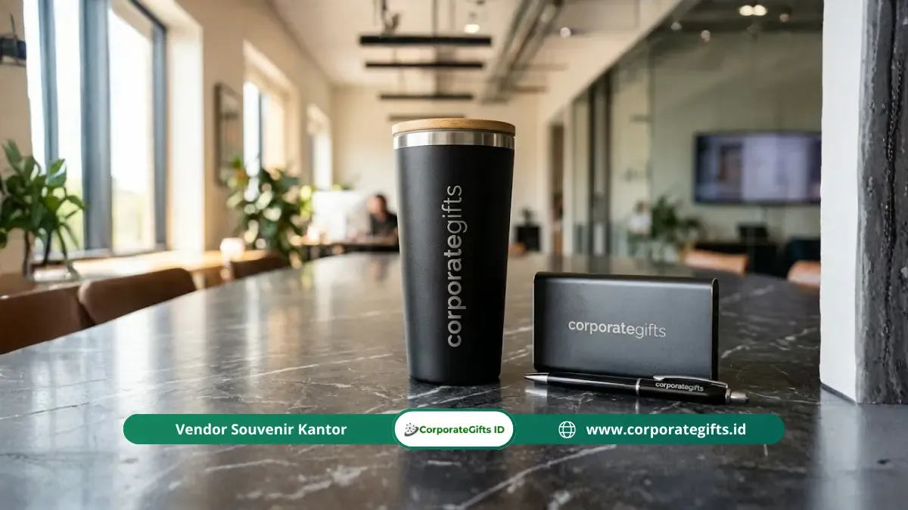

Corporate Gifts ID - Item fungsional goodie bag seminar korporat adalah merchandise berlogo perusahaan seperti pulpen berkualitas, buku catatan agenda, tumbler stainless steel, totebag kanvas, dan power bank yang benar-benar dipakai peserta dalam aktivitas sehari-hari setelah acara selesai, sehingga brand perusahaan terus terekspos berulang kali secara alami dan berkelanjutan.
Poin Kunci Goodie Bag Seminar Fungsional:
- Brand Recall Tinggi: Item fungsional menghasilkan impresi visual harian jauh lebih lama dibanding cinderamata pajangan.
- 5 Pilar Produk Unggulan: Pulpen metal branded, notebook agenda berlogo, tumbler vakum, totebag kanvas tebal, dan power bank fast charging.
- Relevansi Skala Acara: Pemilihan item harus disesuaikan secara cermat dengan profil audiens, durasi sesi, dan alokasi anggaran per pax.
- Fungsi Ganda Kemasan: Penggunaan totebag kanvas premium sebagai wadah sekaligus merchandise menghemat biaya kemasan terpisah.
- Presisi Cetak Logo: Kualitas cetak logo dan material menentukan langsung reputasi profesional institusi penyelenggara.
Apa Itu Item Fungsional Goodie Bag Seminar Korporat?
Item fungsional goodie bag seminar korporat adalah produk bercetak identitas visual perusahaan yang dipilih secara khusus karena kegunaannya dalam mendukung aktivitas profesional dan produktivitas harian peserta, bukan semata sebagai souvenir seremonial pajangan.
Berbeda dari merchandise dekoratif yang sering kali berakhir di laci atau tempat sampah, item fungsional terus digunakan peserta berminggu-minggu hingga berbulan-bulan setelah seminar berakhir.
Setiap kali peserta menulis dengan pulpen kantor, membuka lembaran buku catatan di ruang rapat, atau menuang air dari tumbler berlogo perusahaan di meja kerja mereka, mereka secara tidak langsung terpapar kembali pada identitas brand tersebut secara alami.
Menurut riset industri dari Advertising Specialty Institute (ASI) dalam laporan Global Ad Impressions Study, produk promosi fungsional seperti alat tulis meja dan drinkware menghasilkan rata-rata 3.000 hingga 5.800 impresi brand sepanjang masa pakainya.
Angka impresi nyata ini jauh melampaui efektivitas media iklan digital berbayar yang berbiaya tinggi per tayangan. Oleh karena itu, pengadaan paket goodie bag seminar korporat yang dirancang matang berfungsi sebagai investasi reputasi brand jangka panjang.
Mengapa Item Fungsional Lebih Efektif untuk Seminar Korporat?
Item fungsional terbukti menjadi pilihan paling efektif karena peserta seminar profesional memiliki kecenderungan tinggi untuk menyimpan dan memanfaatkan peralatan kerja yang berkualitas. Efektivitas ini didukung oleh empat pilar utama:
- Penggunaan Berkelanjutan: Pulpen, agenda, dan tumbler merupakan kebutuhan kerja harian. Saat digunakan di kantor atau ruang publik, brand terekspos luas ke rekan kerja dan relasi di sekitar peserta.
- Relevansi Konteks Acara: Konferensi korporat dihadiri oleh praktisi bisnis yang membutuhkan media pencatat materi secara langsung. Alat tulis berkualitas memberikan utilitas seketika di hari acara.
- Nilai Apresiasi Positif: Peserta merasa sangat dihargai saat menerima barang bermutu tinggi, yang secara psikologis membentuk sentimen positif terhadap kepedulian perusahaan penyelenggara.
- Efisiensi Anggaran Promosi: Dibandingkan dengan materi cetak sekali buang (seperti brosur atau flyer), merchandise fungsional memberikan return on investment (ROI) branding berkelanjutan dengan biaya per impresi yang sangat rendah.

Kombinasi seminar kit fungsional: pulpen metal elegan, blocknote hardcover, lanyard ID card, dan power bank custom logo.
5 Item Fungsional Utama untuk Goodie Bag Seminar Korporat
Berdasarkan tren kurasi cinderamata korporat modern, terdapat lima item unggulan yang terbukti memiliki tingkat retensi penggunaan paling tinggi di kalangan profesional:
1. Pulpen Branded Berkualitas
Pulpen berlogo perusahaan adalah item paling fundamental dalam setiap goodie bag seminar karena fungsi pencatatan instan dan fleksibilitas produksinya. Namun, pulpen yang disematkan bukan sekadar pulpen plastik tipis sekali pakai.
Pulpen berbahan bodi metal, resin solid, atau aluminium dengan teknologi grafir laser memberikan sensasi genggam yang mantap, aliran tinta yang konsisten, dan daya tahan lama. Untuk seminar eksekutif, pulpen metal multifungsi yang dilengkapi stylus layar sentuh menjadi pilihan yang sangat diminati oleh audiens digital aktif.
2. Buku Catatan atau Notepad Berlogo Perusahaan
Buku catatan atau agenda kerja adalah perlengkapan yang digunakan langsung selama sesi materi berlangsung dan berlanjut sebagai buku catatan kerja bulanan.
Pilihan buku agenda A5 hardcover berbahan kulit sintetis PU dengan teknik cetak logo deboss/emboss timbul menghadirkan kesan mewah dan eksklusif. Format isi hybrid (kombinasi halaman bergaris untuk notula dan halaman grid/polos untuk diagram kerja) sangat disukai oleh lintas divisi kerja.
3. Tumbler atau Botol Minum Berlogo
Tumbler vakum stainless steel memiliki tingkat retensi pakai tertinggi karena kebutuhan hidrasi harian di meja kerja kantor maupun perjalanan komuter.
Gunakan material food-grade stainless steel SUS 304 double-wall yang mampu mempertahankan suhu minuman panas atau dingin hingga 8-12 jam. Kapasitas 450ml hingga 500ml adalah ukuran paling ideal karena praktis dimasukkan ke dalam tas ransel atau tas kerja.
4. Totebag Kain Kanvas Bermotif Tema Acara
Totebag kain kanvas tebal (gramasi 280gsm ke atas) berfungsi ganda sebagai kantong goodie bag di hari acara sekaligus tas belanja harian ramah lingkungan setelahnya.
Sentuhan desain tipografi tema seminar yang estetik dan minimalis membuat tas ini tidak terasa terlalu kaku, sehingga peserta dengan senang hati menggunakannya untuk aktivitas kasual di luar jam kantor.
5. Power Bank Berlogo untuk Acara Multi-Hari
Power bank promosi fast charging merupakan item bernilai tinggi yang sangat relevan untuk konferensi, workshop intensif, atau simposium multi-hari di mana peserta terus menggunakan gawai pintar mereka.
Kapasitas 10.000 mAh dengan dukungan port ganda USB-C Power Delivery dan proteksi arus pendek (IC Protection) memastikan keandalan gawai peserta tetap prima sepanjang rangkaian acara.
Tabel Komparasi Karakteristik & Retensi Penggunaan Item Goodie Bag
Berikut matriks perbandingan 5 item fungsional goodie bag seminar korporat sebagai panduan penyusunan paket cinderamata yang ideal:
| Nama Item | Material Rekomendasi | Perkiraan Masa Pakai | Tingkat Retensi Brand | Kesesuaian Target Audiens |
|---|---|---|---|---|
| Pulpen Metal Branded | Metal / Aluminium Alloy | 6 - 12 Bulan (Isi Ulang) | Tinggi (Dipakai Menulis) | Semua Jenis Seminar & Rapat |
| Buku Catatan / Agenda A5 | Hardcover Kulit PU / Bookpaper | 8 - 12 Bulan | Sangat Tinggi (Catatan Kerja) | Workshop, Pelatihan, Konferensi |
| Tumbler Stainless SUS 304 | SUS 304 Double-Wall Vacuum | 2 - 3 Tahun Lebih | Maksimal (Hidrasi Harian) | Seminar Korporat & Gathering |
| Totebag Kanvas Premium | Kain Kanvas Katun 10-12 oz | 1 - 2 Tahun | Tinggi (Mobilitas Publik) | Wadah Utama Semua Acara |
| Power Bank Fast Charging | Bodi ABS Logam / Li-Polymer | 2 - 3 Tahun | Sangat Tinggi (Gadget Gadget) | Konferensi Multi-Hari & VIP |
Bagaimana Cara Memilih Item yang Tepat untuk Goodie Bag Seminar?
Pemilihan komposisi paket goodie bag seminar yang tepat memerlukan analisis terstruktur pada empat parameter utama:
- Profil Demografis dan Jabatan Peserta: Seminar tingkat manajerial ke atas membutuhkan kurasi item yang lebih eksklusif (seperti gift set pulpen metal dan agenda kulit), sedangkan pelatihan operasional massal dapat menitikberatkan pada totebag, blocknote, dan pulpen fungsional.
- Durasi dan Format Acara: Acara setengah hari cukup dibekali paket dasar (pulpen, notepad, dan totebag), sementara simposium atau konferensi 2-3 hari sangat dianjurkan dilengkapi tumbler dan power bank pendukung mobilitas.
- Alokasi Anggaran per Pax: Anggaran rata-rata berkisar antara Rp75.000 hingga Rp350.000+ per peserta. Prioritaskan alokasi dana ke 2-3 item berkualitas prima daripada membagikan banyak barang murah yang mudah rusak.
- Kesesuaian Identitas Industri (Brand Fit): Perusahaan teknologi sangat serasi dengan gadget portabel, sedangkan institusi pendidikan atau firma hukum lebih selaras dengan peralatan tulis klasik eksekutif.
Apa Kesalahan Umum dalam Memilih Item Goodie Bag Seminar Korporat?
Banyak panitia terjebak dalam kesalahan umum yang mengakibatkan pemborosan anggaran dan merugikan reputasi brand perusahaan:
- Tergiur Harga Termurah Tanpa Uji Mutu: Memilih pulpen yang macet saat dipakai atau tumbler yang bocor akan meninggalkan kesan buruk tentang profesionalisme penyelenggara.
- Menyisipkan Item Cinderamata Tanpa Nilai Guna: Brosur tebal, gantungan kunci murah, atau pin logam kecil jarang dimanfaatkan dan hampir pasti langsung dibuang setelah acara.
- Kualitas Cetak Logo yang Buram atau Mengelupas: Logo perusahaan yang luntur dalam hitungan hari merusak kredibilitas visual merek. Pastikan teknik branding disesuaikan dengan jenis bahan (misal laser grafir untuk logam/kayu, sablon presisi untuk kain).
- Mengabaikan Desain Kemasan: Barang berkualitas yang diserahkan dalam kantong plastik kresek tipis akan kehilangan nilai kemewahannya seketika. Kemasan totebag kanvas atau goodie bag spunbond tebal memberikan unboxing experience yang jauh lebih elegan.
Tips Produksi dan Pengadaan Item Goodie Bag Seminar
Agar proses pengadaan goodie bag berjalan lancar tanpa kendala tenggat waktu (deadline), perhatikan panduan praktis berikut:
- Mulai Perencanaan Minimal 4-6 Minggu Sebelum Acara: Waktu yang cukup memberikan ruang untuk proses perancangan mockup visual, pembuatan sampel fisik proofing, hingga produksi massal dan kontrol kualitas (QC).
- Wajib Meminta Approval Sampel Fisik (Dummy Proof): Jangan memulai cetak massal sebelum panitia memegang dan memverifikasi sampel fisik guna memastikan ketepatan warna Pantone logo, ketajaman cetak, dan kelayakan bahan.
- Sediakan Cadangan Kuota (Buffer Stock) 5-10%: Selalu tambahkan pesanan sekitar 5-10% di atas jumlah peserta terdaftar untuk mengantisipasi kehadiran tamu kehormatan (VIP) dadakan atau peserta tambahan di lokasi acara.
- Pilih Vendor Pengadaan Resmi dan Terpercaya: Pastikan bermitra dengan vendor spesialis B2B seperti CorporateGifts.ID yang menyediakan legalitas lengkap, faktur pajak resmi, garansi mutu, dan ketepatan waktu pengiriman.
Pertanyaan Seputar Item Fungsional Goodie Bag Seminar Korporat (FAQ)
Kesimpulan Praktis
Kurasi item fungsional goodie bag seminar korporat yang tepat bukan sekadar menyematkan logo perusahaan di atas barang promosi, melainkan memberikan solusi nyata yang menunjang aktivitas profesional peserta sehari-hari.
Lima item unggulan pulpen metal berkualitas, buku catatan agenda, tumbler vakum tahan suhu, totebag kanvas multifungsi, dan power bank fast charging terbukti menghadirkan impresi merek yang kuat, bertahan lama, dan bernilai ekonomis tinggi.
Percayakan pengadaan paket goodie bag dan seminar kit korporat perusahaan Anda kepada tim ahli CorporateGifts.ID untuk jaminan kualitas material terbaik, ketepatan jadwal produksi, dan layanan konsultasi desain profesional.